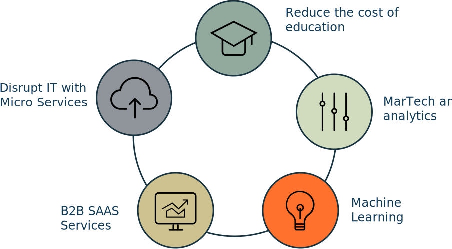

{{> header active_sectors=true}}
<div class="meat">
  <div class="intro">
    <div class="container">
      <div class="row">
        <div class="col-xs-12">
          <p>It is about results and not the program itself.</p>
          <h1>Effectively engineering growth <br class="hidden-xs" /> is what matters most.</h1>
            <p>“Make every detail perfect and limit the number of details to perfect” <br class="hidden-xs" />— Jack Dorsey, Twitter co-founder </p>
        </div>
      </div>
    </div>
  </div>
    
  <div class="section">
      <div class="container-fluid">
          <div class="row">
            <div class="col-xs-12 border-left border-right-zero">
                <div class="box box-lightgrey"> 
                  <h2>We select top startups in sectors <br class="hidden-xs" />where we provide maximum impact.</h2>
                    <p>You are not automatically disqualified if your company is outside these sectors. Contact us.</p>
                    <div class="sector-image">
                        
             
                    </div>
                </div>
              </div>
          </div>
      </div>
  </div>   
    
{{> register-company}}
    
  <div class="section">
      <div class="container-fluid">
          <div class="row">
            <div class="col-xs-12 border-left border-right-zero">
                <div class="box box-darkgreybig"> 
                  <h2>We are more than mentors. <br class="hidden-xs" /> We take on an operating role.</h2>
                    <p>Once we engage we are committed. We step in with both feet and do real work. 
We work with you for 4 to 12 months and often with a round of financing as the desired milestone.</p>
                    <p>We don’t require a fixed percentage of equity compensation. 
Instead,  we craft an individual deal based on a mix of cash and equity that works for you.</p>

                </div>
              </div>
          </div>
      </div>
  </div>    
    

    
    
    
  <div class="section">
      <div class="container-fluid">
          
          <div class="row">
            <div class="col-xs-12">
                <div class="box box-lightgrey">
                  <h2>The teams and ideas we back</h2>
                    <p>We love to support awesome teams. We want to feel the energy in the room. Here are some of the concepts and criteria we test for. These are based on our experience working with many startups. Our intent is to give you the idea, and not to set hard criteria.</p>

                </div>  
            </div>
          </div>
          
          <div class="row box-vert-align">
            <div class="col-xs-12 col-sm-4 col-md-4 col-lg-4 bg-green border-right">
                <div class="box box-green">
 
                    <h3>Founder team</h3>
                  <p>Our founders are passionate. We look for a balance between technical and non-technical founders. A team of two to three is ideal.
You fully understand why you want to go to the U.S. and you are committed. </p>
                </div>  
            </div>
              
            <div class="col-xs-12 col-sm-4 col-md-4 col-lg-4 bg-orange border-right">
                <div class="box box-orange">

                    <h3>Financing</h3>
                  <p>You have raised seed financing in your local market from a diverse group of business angles or institutional investors.
The founding team still owns at least 60% of the equity.</p>
                </div>  
            </div>
              
                <div class="col-xs-12 col-sm-4 col-md-4 col-lg-4 bg-violet">
                <div class="box box-violet">

                    <h3>Product</h3>
                  <p>We optimize for product - market fit and our approach is driven by metrics.
We are guided by benchmarks for both B2B and B2C offerings, addressing a global market.</p>
                </div>  
            </div>
          </div>
          
          <div class="row box-vert-align">
            <div class="col-xs-12 col-sm-4 col-md-4 col-lg-4 bg-blue">
                <div class="box box-blue">

                    <h3>Business model</h3>
                  <p>We expect you to have validated your business model in your local market. You should be able to have some metrics to show.
We discount the business plan in favor of unit economics and user engagement metrics. Simplicity trumps complexity.</p>
                </div>  
            </div>
              
            <div class="col-xs-12 col-sm-4 col-md-4 col-lg-4 bg-red">
                <div class="box box-red">

                    <h3>Go-to-market</h3>
                  <p>We emphasize scale both for customer acquisition and product delivery.
We are looking for models with low customer acquisition cost. And we favor narrow markets that you intend to dominate.</p>
                </div>  
            </div>
              
                <div class="col-xs-12 col-sm-4 col-md-4 col-lg-4 bg-darkgrey">
                <div class="box box-darkgrey">

                  <h3>Competition</h3>
                  <p>We know that many similar ideas are tried. Therefore, our focus is on well articulated segmentation and your ability to execute.
Sharp and well articulated founders have a higher probability for success.</p>
                </div>  
            </div>
          </div>          
    
      </div>    
  </div>
    
</div>  

{{> subscribe}}
{{> footer}}